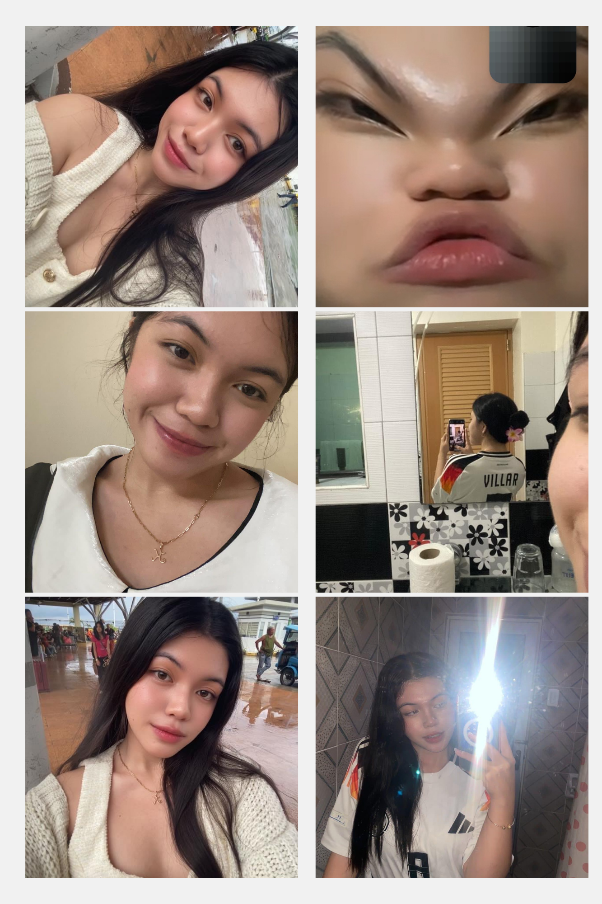
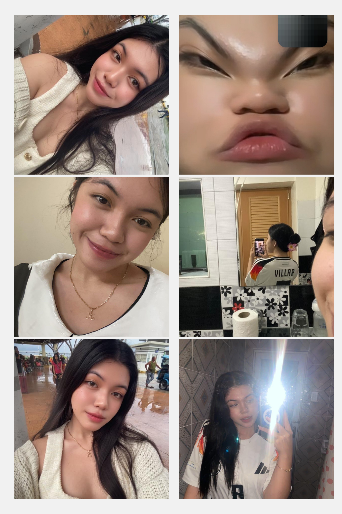

My Bebeng
You are the light of my life, and I’m so grateful to have you by my side every day.
- my always langga

Happy Valentine's Day! For weeks now, I've been working on a special space created just for you filled with thoughts, memories, and love.
I wanted to give you something truly meaningful, but no gift could ever compare to how much you mean to me. So instead, I'm giving you something straight from my heart my passion, my time, and my love.
I hope this brings you joy, just as you bring joy into my life every day.
With all my love,
You are the light of my life, and I’m so grateful to have you by my side every day.
- my always langga
Every time I see you, it feels like Sweet Disposition euphoric, timeless, and like the whole world fades away, leaving only you
Every moment with you is a priceless treasure, a memory I hold close to my heart. I cherish these pictures because they remind me of just how incredibly special you are to me every smile, every glance, every second spent together is a beautiful part of our story.
 


Here’s a little video that always makes me think of us.
Yleah, your name’s a melody, A song that floats so free. Soft as whispers in the breeze, A tune of love and harmony."
The sun may rise and fall each day, But your light will never fade away. Yleah, you shine so pure, so bright, A beacon in my darkest night.
Your smile could melt the coldest snow, A light the world will always know.
Even when you're far away, I hear your voice in winds that play. Your love’s a whisper in my ear, A song that lingers, soft and near.A longing gaze, a stolen kiss. For every dream I've wished to see, Was always you, just you and me.
Through lifetimes long, through skies so blue, Through every dawn, my heart seeks you. For love’s not found in fleeting days, But in your touch, in endless ways.
With you, every moment feels like a dream I never want to wake up fromsoft, endless and filled with light. Your brown eyes hold entire galaxies, pulling me in deeper than I ever thought possible. And that beautiful smile of yours? It’s my favorite sight, the one thing that can stop time itself. Even when you tease me, even when you make me blush, all I can do is fall harder, caught in the magic of you.
I made this website because I didn’t know what gift could ever be enough for you. But I wanted to give you something that lasts something that stays with you, even when I’m not there. So whenever you miss me, whenever you wonder, just click the link… and maybe, for a moment, you’ll feel me right there beside you